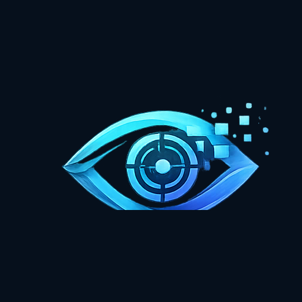
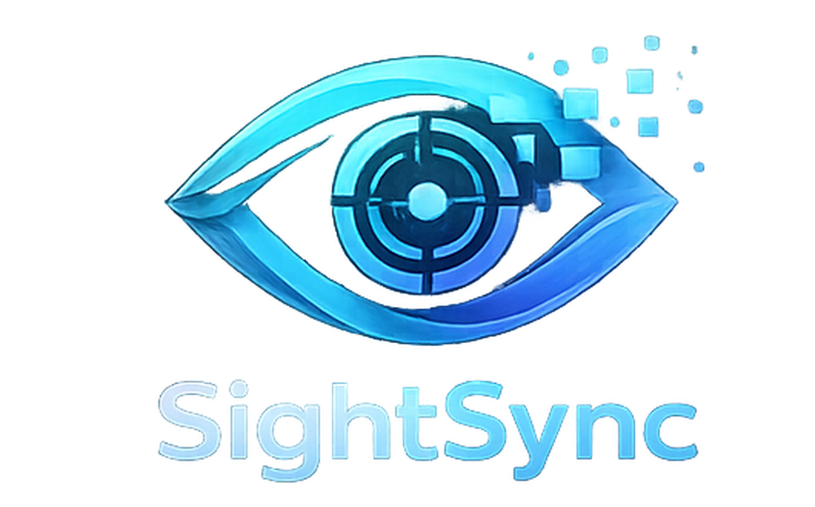

Enter Prescription
Add OD/OS sphere, cylinder, axis, add, and PD fields.

SightSyncWindows display comfort utility
SightSync uses your saved prescription to tune brightness, contrast, warmth, and clarity settings for more comfortable screen reading across supported Windows apps.
Windows 10 and Windows 11 compatible. Press Ctrl + F5 to return to regular view.
| Region | Units | Revenue |
|---|---|---|
| North | 1,295 | $123,456 |
| South | 1,820 | $145,789 |
| East | 1,456 | $134,567 |
| Total | 6,183 | $556,601 |
SightSync applies a display profile at the Windows level where supported, so your screen feels more consistent while you work.
Simple setup
Add OD/OS sphere, cylinder, axis, add, and PD fields.
The app estimates a comfortable brightness, contrast, and warmth profile.
Windows display settings are adjusted where the monitor and system allow it.
Use Ctrl + F5 to turn SightSync off and return to regular view.
Designed for people who spend hours reading documents, spreadsheets, and web pages.
"SightSync is built to make computer-distance reading feel more comfortable without changing the way you work."
Progressive and everyday glasses are important, but computer-distance viewing can still be uncomfortable. SightSync adds software display tuning for your Windows screen.
Plans
20 hours per week for testing SightSync.
Everyday personal use on a Windows workstation.
For heavier document and office workflows.
Prepared for advanced support and business licensing.
FAQ
No. SightSync is not a medical device and does not physically replace prescribed eyewear. It tunes your Windows display for comfort and readability.
Yes, SightSync applies Windows display adjustments where Windows and the monitor support software control, so it can help while using PDFs, browsers, Word, Excel, and local files.
Press Ctrl + F5 to toggle SightSync off and restore regular display settings.

Try SightSync free for Windows. No credit card required for the free download.